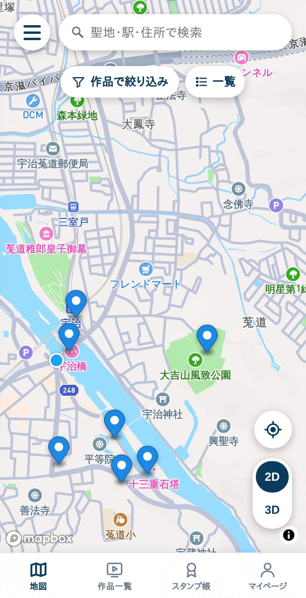
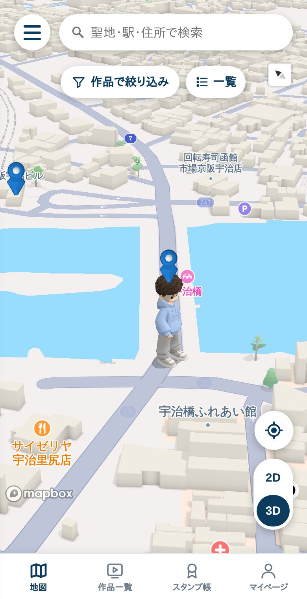
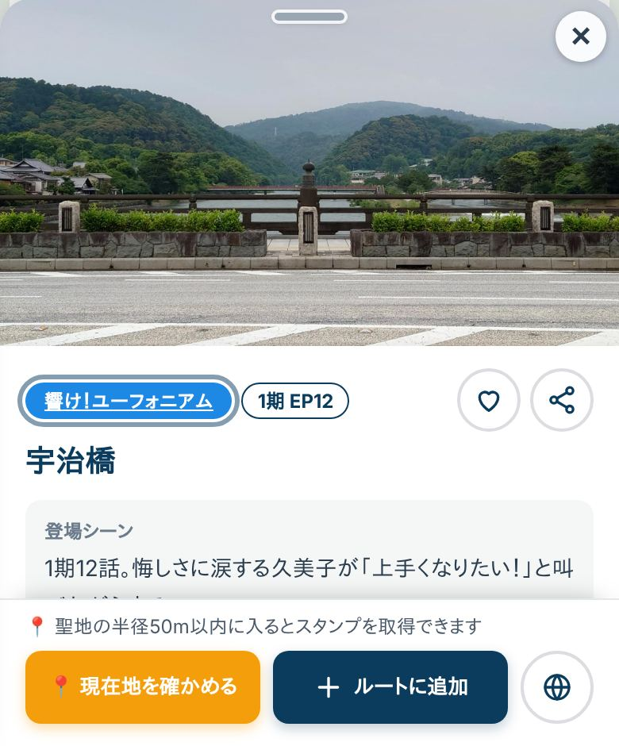
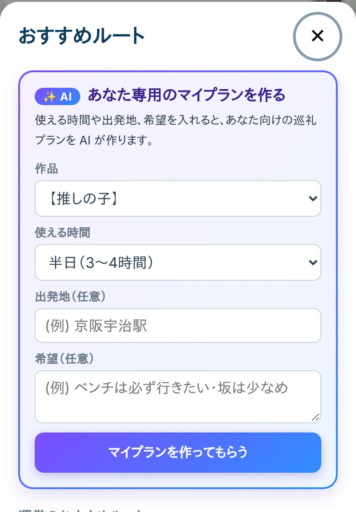
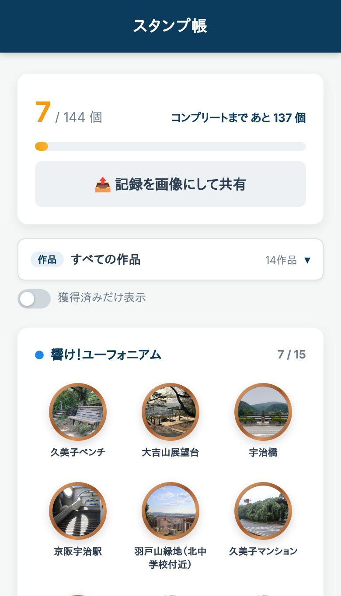
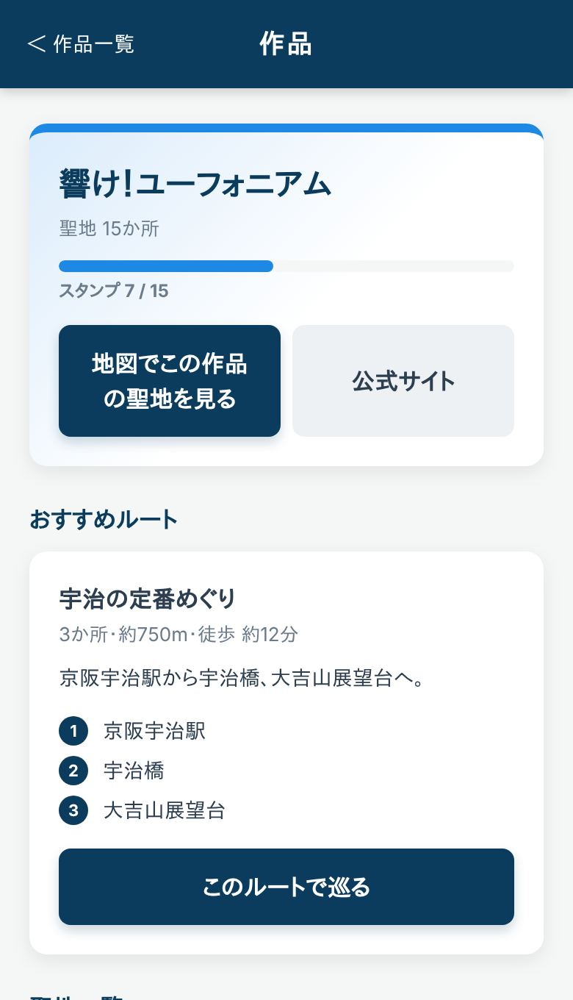

地図で聖地を探す
作品ごとに色分けされたピンで、近くの聖地がひと目で分かります。作品名や駅名で探したり、作品で絞り込んだりできます。
–作品・–か所の聖地を巡れます






作品ごとに色分けされたピンで、近くの聖地がひと目で分かります。作品名や駅名で探したり、作品で絞り込んだりできます。
作品ページでは、聖地を話数の順に並べて見られます。「何期の何話」の場面か、写真と登場シーンで確かめられます。
聖地に着いたらスタンプを獲得。スタンプ帳で集まり具合を見たり、巡った数でバッジをもらえたりします。
行きたい聖地を並べると、歩く道順を地図に出せます。Googleマップで道案内したり、ルートを友だちに送ったりもできます。
作品・使える時間・出発地・希望を入れると、AI があなた向けの巡礼プランを作ります。運営のおすすめルートもあります。
3D 表示にすると建物が立体になり、あなたの現在地をキャラクターが一緒に歩いてくれます。
気になるピンをタップすると、登場シーンや写真が見られます。
行きたい聖地をルートに入れて、地図の道順や Googleマップで道案内。
聖地の近く（約50m以内）でスタンプを獲得しよう。
聖地の多くは、地元の方が暮らしたり働いたりしている場所です。
Safari の下の 共有ボタン（□↑） を押し、「ホーム画面に追加」 を選びます。
Chrome の右上の ︙ を押し、「ホーム画面に追加」（または「アプリをインストール」）を選びます。
電波の弱い所でも、一度開いた地図や聖地は見られます。
QRコードを読み取ると、スマホでこのページが開きます。現在地（GPS）を使って、実際に歩きながらスタンプを集められます。
https://x23u002.github.io/seiti/